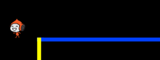

Let’s start by creating a character that can move left and right, as well as climb up poles.
Activity Checklist
Start a new Scratch project, and delete the cat sprite so that your project is empty. You can find the online Scratch editor at jumpto.cc/scratch-new.
For this project, you should have a ‘Project Resources’ folder, containing the background image you’ll need. Make sure that you can find this folder, and ask your club leader if you can’t find it.
screenshot
Add the image ‘background.png’ as a new stage backdrop, or draw your own! If you’re drawing your own level, just make sure that the poles and the floors are different colours, and that there’s a door (or something similar) that your player has to reach. Here’s how your project should look:
screenshot
Add a new sprite, which will be your character. It’s better if you choose a sprite with multiple costumes, so that you can make it look as though it’s walking.
screenshot
Let’s use the arrow keys to move your character around. When the player presses the right arrow, you want your character to point right, move a few steps and change to the next costume:
when flag clicked
forever
if <key [right arrow v] pressed? > then
point in direction (90 v)
move (3) steps
next costume
end
end
Test out your character by clicking the flag and then holding down the right arrow key. Does your player move to the right? Does your character look like they are walking?
screenshot
To move your character to the left, you’ll need to add another if block inside your forever loop, which moves your character to the left. Remember to test your new code, to make sure that it works!
To climb a pole, your character should move up slightly whenever the up arrow is pressed and they’re touching the correct colour. Add this code inside your character’s forever loop:
if < <key [up arrow v] pressed?> and <touching color [#FFFF00]?> > then
change y by (4)
end
Test your character - can you climb the yellow poles and get to the end of your level?
screenshot
Save your project
Challenge: Completing the level
Can you add more code to your character, so that they say something if they get to the brown door?
screenshot
Save your project
Step 2: Gravity and jumping
Let’s make your character move more realistically, by adding gravity and allowing them to jump.
Activity Checklist
You may have noticed that your character can walk off a platform into mid-air. Try to walk off of a platform and see what happens.
screenshot
To fix this, let’s add gravity to your game. Create a new variable called gravity. You can hide this variable from your stage if you want to.
screenshot
Add this new code block, which sets the gravity to a negative number, and then uses this to repeatedly change your character’s y-coordinate.
when flag clicked
set [gravity v] to [-4]
forever
change y by (gravity)
end
Click the flag, and then drag your character to the top of the stage. What happens? Does the gravity work as you expected?
screenshot
Gravity shouldn’t move your character through a platform or a pole! Add an if block to your code, so that the gravity only works when your character is in mid-air. The gravity code should now look like this:
when flag clicked
set [gravity v] to [-4]
forever
if < not < <touching color [#0000FF]?> or <touching color [#FFFF00]?> > > then
change y by (gravity)
end
end
Test the gravity again. Does your character stop when they are on a platform or a pole? Can you walk off the edge of platforms to the level below?
screenshot
Let’s also make your character jump when the player presses the space bar. One very easy way to do this is to move your character up a few times, using this code:
when [space v] key pressed
repeat (10)
change y by (4)
end
As gravity is constantly pushing your character down by 4 pixels, you need to choose a number greated than 4 in your change y by (4) block. Change this number until you’re happy with the height your character jumps.
If you test out this code, you’ll notice that it works, but the movement isn’t very smooth. To make jumping look smoother, you’ll need to move your character by smaller and smaller amounts, until they’re not jumping anymore.
To do this, create another variable called jump height. Again, you can hide this variable if you prefer.
Delete the jumping code you added to your character, and replace it with this code:
when [space v] key pressed
set [jump height v] to [8]
repeat until < (jump height) = [0] >
change y by (jump height)
change [jump height v] by (-0.5)
end
This code moves your character up by 8 pixels, then 7.5 pixels, then 7 pixels, and so on, until your character has finished jumping. This makes jumping look much smoother.
Change the starting value of your jump height variable and test it until you’re happy with the height your character jumps.
Save your project
Challenge: Improved jumping
Your character is able to jump whenever the spacebar is pressed, even if they’re already in mid-air. You can test this by just holding down the spacebar. Can you fix this, so that your character can only jump if they’re touching a blue platform?
Save your project
Step 3: Dodging balls
Now that you’ve got your character moving around, let’s add some balls for your character to avoid.
Activity Checklist
Create a new ball sprite. You can choose any type of ball you like.
screenshot
Resize your ball, so that your character can jump over it. Try jumping over the ball to test it.
screenshot
Add this code to your ball:
screenshot
This code creates a new ball clone every 3 seconds. Each new clone moves along the top platform.
Click the flag to test this out.
screenshot
Add more code to your ball sprite, so that they move across all 3 platforms.
screenshot
Finally, you’ll need code for when your character gets hit by a ball! Add this code to your ball sprite:
when I start as a clone
forever
if < touching [Pico walking v]? > then
broadcast [hit v]
end
end
You’ll also need to add code to your character, to move back to the start when they’re hit:
when I receive [hit v]
point in direction (90 v)
go to x: (-210) y: (-120)
Test out your character and see if they go back to the start when they’ve been hit by a ball.
Save your project
Challenge: Random balls
The balls your character has to dodge all look the same, and always appear every 3 seconds. Can you improve them, so that they:
don’t all look the same?
appear after a random amount of time?
are a random size?
screenshot
Save your project
Step 4: Lasers!
Let’s make your game a little harder to complete, by adding lasers!
Activity Checklist
Add a new sprite to your game, called ‘Laser’. It should have 2 costumes, called ‘on’ and ‘off’.
screenshot
Place your new laser anywhere you like, between 2 platforms.
screenshot
Add code to your laser, to make it switch between the 2 costumes.
when flag clicked
forever
switch costume to [on v]
wait (2) secs
switch costume to [off v]
wait (2) secs
end
If you prefer, you can wait a random amount of time between costume changes.
Finally, add code to your laser, so that the ‘hit’ message is broadcast when the laser touches your character. This code will be the same as the code you added to your ball sprite.
You don’t need to add any more code to your character - they already know what to do when they get hit!
Test out your game to see if you can get past the laser. Change the wait times in your code if the lasers are too easy or too hard.
Challenge: More obstacles
If you think your game is still too easy, you can add more obstacles to your level. You can add anything you like, but here are some ideas:
A flying killer butterfly;
Platforms that appear and disappear;
Falling tennis balls that must be avoided.
screenshot
You could even create more than one backdrop, and move to the next level when your character reaches the brown door:
if <touching color [#714300]?> then
switch backdrop to [next backdrop v]
go to x: (-210) y: (-120)
wait (1) secs
end
Save your project
Challenge: Improved gravity
There’s one other small bug in your game: gravity doesn’t pull your character downwards if any part of it is touching a blue platform - even it’s head! You can test this out by climbing most of the way up a pole and then moving to the left.
screenshot
Can you fix this bug? To do this, you need to give your character different coloured trousers (on all costumes)…
screenshot
…and then replace the code:
< touching color [#0000FF]? >
with:
< color [#00FF00] is touching [#0000FF]? >
Remember to test your improvements to make sure you’ve fixed the bug!
Save your project
Challenge: More lives
Can you give your player 3 lives, instead of just sending them back to the beginning each time? Here’s how your game could work:
Your player starts with 3 lives;
Whenever your player gets hit, one life is lost and they go back to the start;